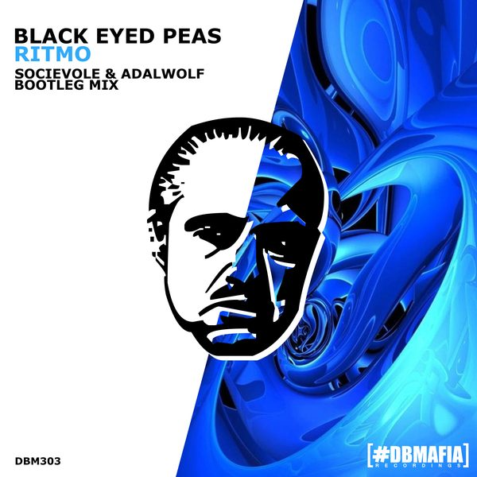
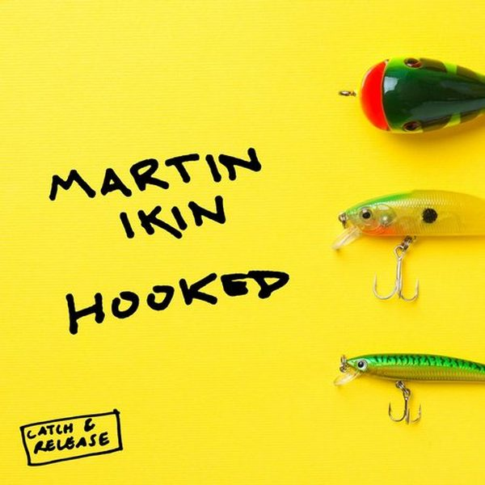
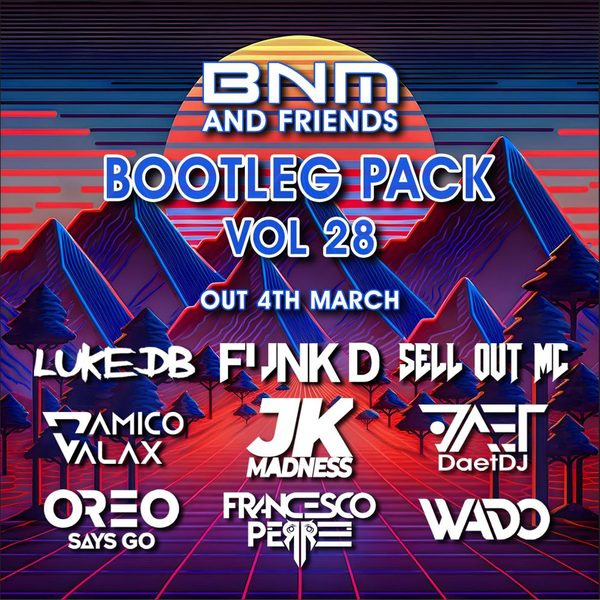

I 32 dischi
 1
You'll Be MineMarco Lys
1
You'll Be MineMarco Lys
 2
HigherAlaia & Gallo feat. Rion S.
2
HigherAlaia & Gallo feat. Rion S.
 3
300 GirlsPromise Land x Dave Crusher Feat Gemeni
3
300 GirlsPromise Land x Dave Crusher Feat Gemeni
 4
LIFEMambo Brothers
4
LIFEMambo Brothers
 5
Promised Land (Erick Morillo Remix)Joe Smooth
5
Promised Land (Erick Morillo Remix)Joe Smooth
 6
Black & BlueLost Frequencies & Mokita
6
Black & BlueLost Frequencies & Mokita
 7
Shined on Me (Kevin McKay Remix)CASSIMM, Kevin McKay
8
Desert SunHusko, Elliot Fitch
7
Shined on Me (Kevin McKay Remix)CASSIMM, Kevin McKay
8
Desert SunHusko, Elliot Fitch
 9
Look AheadDavid Aurel
9
Look AheadDavid Aurel
 10
To The EndAsketa & Natan Chaim x Do it Big
10
To The EndAsketa & Natan Chaim x Do it Big
 11
Congratulations ft. BrandoDon Diablo
11
Congratulations ft. BrandoDon Diablo
 12
All Night LongJonas Blue & RetroVision
12
All Night LongJonas Blue & RetroVision
 13
Could Be YouMichael Calfan
13
Could Be YouMichael Calfan
 14
Ontas (Te Pago El Uber)Leandro Da Silva
14
Ontas (Te Pago El Uber)Leandro Da Silva
 15
Shake ItTujamo & NØ SIGNE
15
Shake ItTujamo & NØ SIGNE

16 RITMOThe Black Eyed Peas J Balvin 17
piece of your heartMeduza
17
piece of your heartMeduza
 18
Losing itFisher
18
Losing itFisher
 19
Praise You Purple Disco Machine remixFatboyslim
19
Praise You Purple Disco Machine remixFatboyslim
 20
Baiana (Jack Back rmx)Barbatuques
20
Baiana (Jack Back rmx)Barbatuques
 21
Don't start nowDua Lipa
21
Don't start nowDua Lipa
 22
Turn me onRiton
22
Turn me onRiton
 23
GiantCalvin Harris
23
GiantCalvin Harris

24 HookedMartin ink
25
Right Here Right Now Camelphat remixFatboyslim
 26
Free your bodyChris Lake,Solardo
27
San FranciscoDom Dolla
26
Free your bodyChris Lake,Solardo
27
San FranciscoDom Dolla

28 Move your bodyMarshal Jeffersonn
29
Your little beautyFisher
 30
This grooveOliver Heldens
30
This grooveOliver Heldens
 31
JoysRoberto Surace
32
This is americaChris Gambino
31
JoysRoberto Surace
32
This is americaChris Gambino
La tracklist
- 1 You'll Be Mine Marco Lys Armada Music
- 2 Higher Alaia & Gallo feat. Rion S. Glasgow Underground
- 3 300 Girls Promise Land x Dave Crusher Feat Gemeni Hysteria Records
- 4 LIFE Mambo Brothers TurnItUp Muzik
- 5 Promised Land (Erick Morillo Remix) Joe Smooth Armada Music
- 6 Black & Blue Lost Frequencies & Mokita Found Frequencies
- 7 Shined on Me (Kevin McKay Remix) CASSIMM, Kevin McKay Glasgow Underground
- 8 Desert Sun Husko, Elliot Fitch Glasgow Underground
- 9 Look Ahead David Aurel Glasgow Underground
- 10 To The End Asketa & Natan Chaim x Do it Big Hexagon
- 11 Congratulations ft. Brando Don Diablo Hexagon
- 12 All Night Long Jonas Blue & RetroVision Electronic Nature Records
- 13 Could Be You Michael Calfan Spinnin' Records
- 14 Ontas (Te Pago El Uber) Leandro Da Silva Spinnin' Records
- 15 Shake It Tujamo & NØ SIGNE Spinnin' Records
- 16 RITMO The Black Eyed Peas J Balvin Epic
- 17 piece of your heart Meduza Intercord
- 18 Losing it Fisher Catch & Release / Astralwerks
- 19 Praise You Purple Disco Machine remix Fatboyslim Defected Records
- 20 Baiana (Jack Back rmx) Barbatuques WM Italy
- 21 Don't start now Dua Lipa Warner Records
- 22 Turn me on Riton Ministry of Sound Recordings
- 23 Giant Calvin Harris Columbia
- 24 Hooked Martin ink Catch & Release
- 25 Right Here Right Now Camelphat remix Fatboyslim Toolroom Records
- 26 Free your body Chris Lake,Solardo Black Book Records
- 27 San Francisco Dom Dolla Sweat It Out
- 28 Move your body Marshal Jeffersonn Trax Records
- 29 Your little beauty Fisher Catch & Release
- 30 This groove Oliver Heldens HELDEEP Records
- 31 Joys Roberto Surace Hospital Records
- 32 This is america Chris Gambino RCA Records